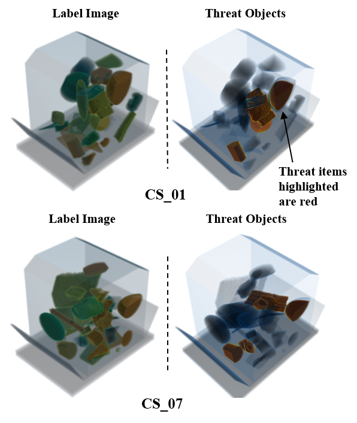
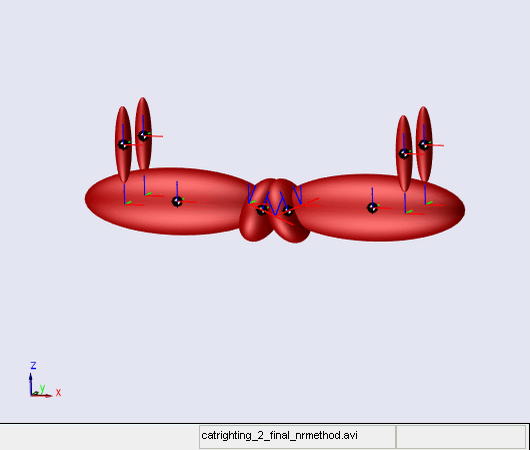

Ankit Manerikar
 |
|
|
|
Ankit Manerikar received his Bachelor's degree in Electronics Engineering with distinction from Mumbai University (2015) and his Masters degree in Electrical and Computer Engineering from Purdue University (2017). He has a wide research and industry experience in the field of Computer Vision, Machine Learning, Image Processing and Robotics spanning a period of ten years, encompassing contributions to over ten labs and companies. Ankit is currently a Doctoral Candidate at the Robot Vision Lab, Purdue University with a research focus on Computer Vision and has authored several publications in this area. His key research interests include X-ray image processing, machine learning for CT segmentation and automatic target recognition as well as SLAM and autonomous navigation for mobile robotics.
| May 2022 - Present . |
Deep Learning SWE Intern, Intel Corporation |
Santa Clara, US . |
| August 2017 - May 2022 . |
Graduate Research Assistant, Robot Vision Lab, Purdue University |
West Lafayette, US . |
| January 2017 - May 2017 . |
Graduate Teaching Assistant, School of Electrical and Computer Engg., Purdue University |
West Lafayette, US . |
| June 2016 - July 2016 . |
Intern: Machine Learning, Firmware and Robotics,
Gade Autonomous Systems |
Mumbai, India. . |
| December 2011 - May 2012 . |
Research Intern/Co-op, Citizen Scales Pvt. Ltd |
Mumbai, India. . |
| June 2010 - November 2010 . |
Robotics Intern/Co-op, Technophilia Systems |
Mumbai, India. . |
- Recipient - J.R.D. Tata Trust Scholarship Award Scholarship for Undergraduate Engineering. Academic Years: 2012-13, 2013-14.
- Recipient - Best Student Paper Award for the paper "Particle Swarm Optimization in Control Systems Design", IEEE Technomania 2013.
- Recipient - Student Award for Academic Merit for First Rank in B.E. (Electronics, DJSCoE), sixth rank in University of Mumbai. Academic Year: 2011-12
- Recipient - Juhu Lions Club Scholarship Award for First Rank in Industrial Electronics (SBM Polytechnic). Academic Years: 2008-09, 2009-10, 2010-11, 2011-12.
Research / Projects
This section presents the list of research topics and projects that I have worked on or am working on. You can find further information about these projects from the links to the publications, codes and videos provided with the topics:
X-ray based security screening of checked and carry-on baggage is the primary line of defence at airport worldwide against the transportation of hazardous and illicit objects. Automatic segmentation of threat objects from baggage scans is thus an important area of research for this application towards speeding up and automating the airport security pipeline. My research on X-ray based target detection explores different aspects of this topic including adaptive threat recognition, dual energy computed tomography and design of baggage data simulation pipelines.
DEBISim: A Simulation Pipeline for Dual-Energy CT Baggage Inspection Systems
 |
A major problem in designing ATR classifiers is the difficulty in generating and obtaining CT datasets containing hazardous materials and objects. An efficient alternative is simulating the CT data for training and testing the ATRs. This work focuses on the implementation of an automated dataset simulation pipeline for ATRs for different types of threat objects. Paper: Code: DEBISim Webpage. |
Adaptive Automatic Target Recognition for CT-based Explosive Detection Systems
|  | Automatic Target Recognition involves designing classifiers for automatic delineation of threat regions from checked baggage scans. But given the changing security scenarios, these classifiers have to deal with varying target specifications for carrying out the segmentation. In this research, we present a two-stage classifier structure that achieves this without re-configuring the entire EDS. Paper: |
Dual Energy Computed Tomography for Target Detection
 |
Dual Energy Computed Tomography deals with scanning a baggage volume with two different X-ray spectral sources simultaneously. This allows extracting additional material-based information from the collected projection data such as the effective atomic number. This research deals with processing dual energy data for better identification of threat materials. Papers: Manerikar, Ankit, Fangda Li, and Avinash Kak. "A Spectrum-
Adaptive Decomposition Method for Effective Atomic Number Estimation using
Dual Energy CT." IS&T Electronic Imaging: Computational Imaging VIII,
IS&T International Symposium on Electronic Imaging, 2020. |
This section enumerates my different projects related to mobile robotics in the areas of path planning, SLAM (Simultaneous Localization And Mapping) and autonomous navigation.
SLAM-Assisted Coverage Path Planning
 |
Surveying and inspection applications for mobile robotics present a unique problem for robot path planning. Unlike a normal path planning task which involves figuring a path from a given source and destination, surveying robots require coverage path planning, i.e., calculating a path that maximizes the area covered by the robot from a given area. We have developed several implementations of coverage path planning for different applications involving indoor and outdoor mobile mapping platforms (MMS) for photogrammetry applications. Papers: |
Recursive Mid-point Displacement Algorithm for Path-Planning
The RMPD (Recursive Mid-Point Displacement) algorithm is a novel way of calculating robot paths and trajectories developing for 6-DOF robots for automatically pruning apple trees branches while collisions. Papers: |
Indoor Place Categorization for Visual SLAM
The topic deals with the problem of visual place categorization (VPC), i.e., the visual identification of an input scene as belonging to a particular semantic pre-trained category. The place detector is implemented with a two-tier structure of a CNN trained for place recognition and a clusterer for partitioning maps for different locations.
Code:
Indoor Place Categorization for Visual SLAM |
This section entails my ventures and projects on control system design for instrumentation and general dynamics.
Position Control Using An Ultrasonic Accoustic Levitation Assembly
 |
The project involved the implementation of an accoustic levitation chamber which allows precise suspension and levitation of particles in mid-air. The levitation phenomenon is created by generated resonant accoustic pressure waves from an ultrasonic horn and by maintaining the resonance by precision control of the cavity length. More Info: pdf |
Autonomous Tripeds - Obstacle Avoidance and Gait Models
It involves the study of tripedal walking mechanism with only one active limb in the center. The combination is still able to mimic bipedal motion with an interesting combination of active and passive dynamic walking mechanisms.
More Info:
GitHub |
Design of a Practical Cat-righting Reflex Model
|  | Here we have implemented a free-falling mechanism that mimics the cat-righting reflex - the ability of a cat to land on all its four legs during a free-fall. The mechanism uses controlled actuation to mimic the non-holonomic centripretal forces that cause the righting reflex. Paper: Manerikar, Ankit, and Anandpara, Tanvi. "Design of a Practical Cat-righting Reflex (CRR) Model." Procedia Computer Science 45 (2015): 514-523. |
| TI IADC 2013: Soil Health Monitoring Kit | Haptic Maneuvering Mechanism | Robotic Manipulator with a Teach Pendant |
List of Publications
- Manerikar, Ankit, Fangda Li, and Avinash C. Kak. "DEBISim: A Simulation Pipeline for Dual Energy CT-based Baggage Inspection Systems." Journal of X-ray Science and Technology. 29.2 (2021): 259-285.
- Manerikar, Ankit, Tanmay Prakash, and Avinash C. Kak. "Adaptive target recognition: A case study involving airport baggage screening." Anomaly Detection and Imaging with X-Rays (ADIX) V. Vol. 11404. International Society for Optics and Photonics, 2020.
- Manerikar, Ankit, Fangda Li, and Avinash Kak. "A Spectrum-Adaptive Decomposition Method for Effective Atomic Number Estimation using Dual Energy CT." IS&T Electronic Imaging: Computational Imaging VIII, IS&T International Symposium on Electronic Imaging, 2020.
- Li, Fangda, Ankit Manerikar, Tanmay Prakash, and Avinash Kak. "A Splitting-Based Iterative Algorithm for GPU-Accelerated Statistical Dual-Energy X-Ray CT Reconstruction." IS&T Electronic Imaging: Computational Imaging VIII, IS&T International Symposium on Electronic Imaging, 2020.
- Shamseldin, Tamer, Ankit Manerikar, Magdy Elbahnasawy, and Ayman Habib. "SLAM-based Pseudo-GNSS/INS localization system for indoor LiDAR mobile mapping systems." In 2018 IEEE/ION Position, Location and Navigation Symposium (PLANS), pp. 197-208. IEEE, 2018.
- Li, Fangda, Ankit V. Manerikar, and Avinash C. Kak. "RMPD—A Recursive Mid-Point Displacement Algorithm for Path Planning." In Twenty-Eighth International Conference on Automated Planning and Scheduling. 2018.
- Manerikar, Ankit, Tamer Shamseldin, and Ayman Habib. "SLAM-Assisted Coverage Path Planning for Indoor LiDAR Mapping Systems." arXiv preprint arXiv:1811.04825 (2018).
- Manerikar, Ankit, and Anandpara, Tanvi. "Design of a Practical Cat-righting Reflex (CRR) Model." Procedia Computer Science 45 (2015): 514-523.
- Manerikar, Ankit, and Anandpara, Tanvi. "Position Control Using Ultrasonic Levitation Assembly." Proceedings of DJ Spark 2015 (2015): 119-123.
- Manerikar, Ankit, and Khan, Shahid. "Particle Swarm Optimization in Control System Design." IEEE Technomania (2013), FRCRE, Mumbai.